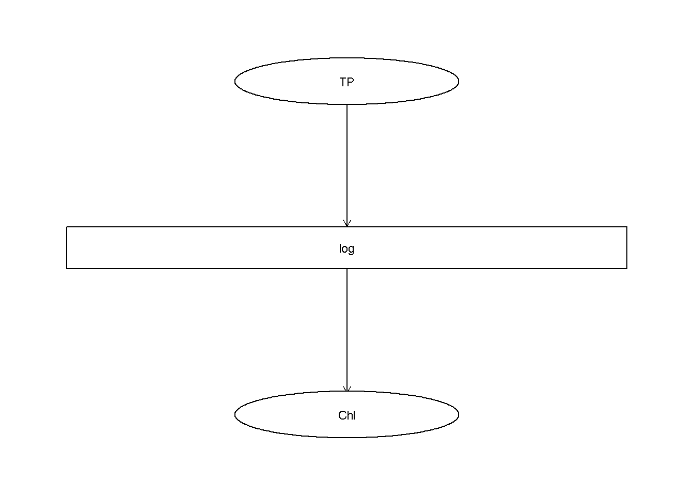
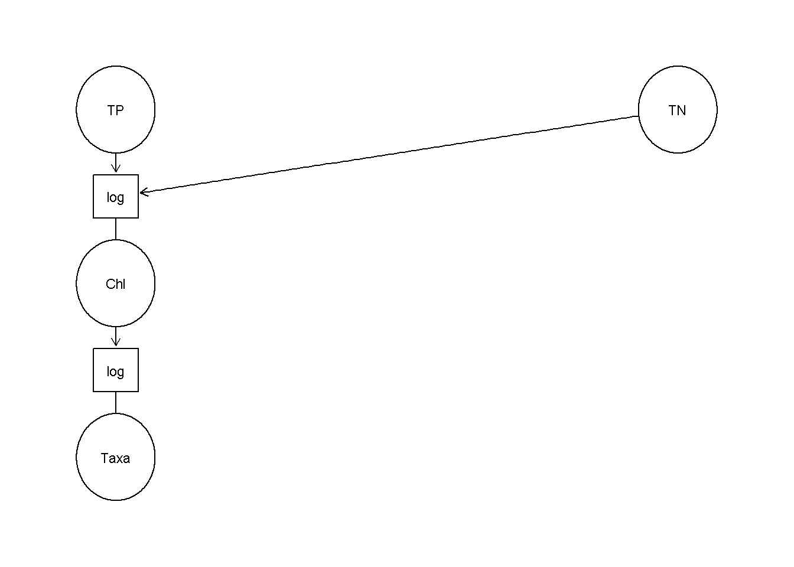
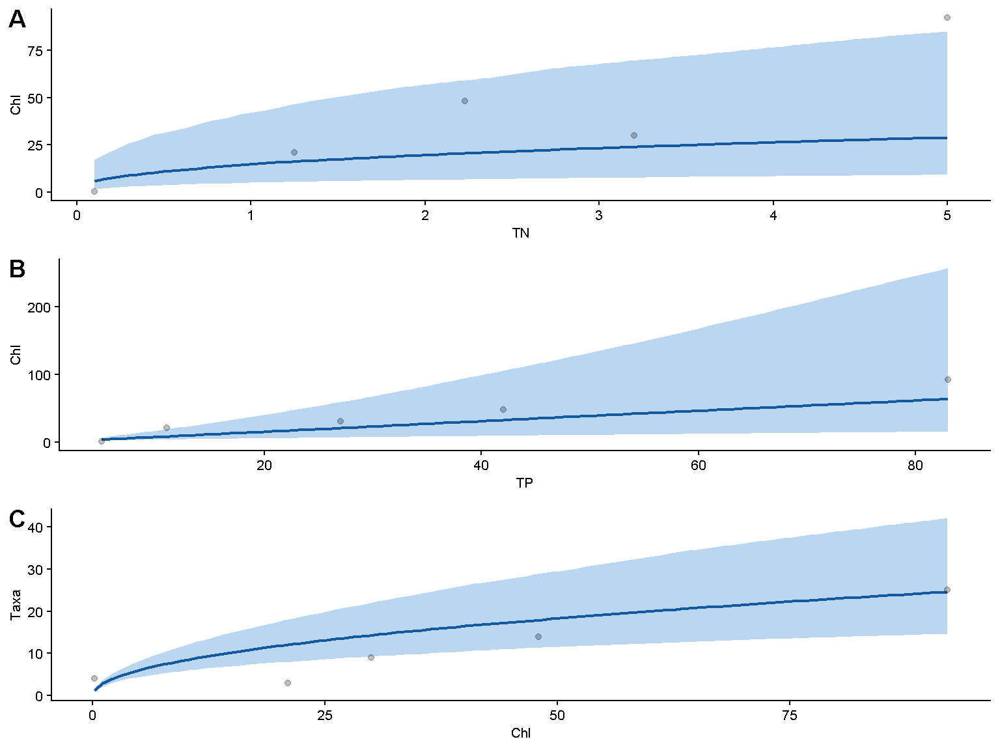
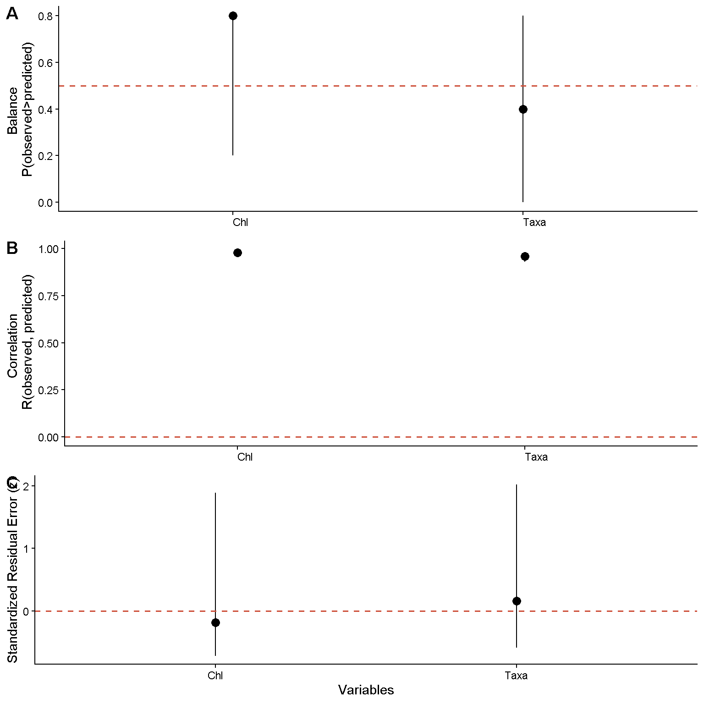

4 Posterior Predictive Meta-Analytic Network
Ecological information is accumulated across numerous independent studies that describe interactions among biotic and abiotic components of ecosystems. Although this literature contains a wealth of ecological information, it is dispersed across publications, expressed using diverse statistical measures, and often communicated qualitatively. Consequently, ecological understanding remains fragmented rather than synthesized into coherent quantitative networks.
This fragmentation is unavoidable. Ecological systems are high-dimensional, and no individual study can simultaneously measure all relevant abiotic and biotic variables. Furthermore, ecological understanding develops as new mechanisms and interactions are better understood. As a result, ecological networks are necessarily incomplete and continuously updated from scattered information.
Existing syntheses frequently describe interactions only as positive or negative relationships. While such qualitative descriptions are useful for conceptual understanding, they provide little information about the magnitude of ecological responses. Conversely, conventional meta-analyses summarize information using standardized effect sizes, such as Cohen’s d,
\[ d=\frac{\overline{x}_{treatment}-\overline{x}_{control}}{SD_{pooled}} \]
while the enable comparison among study, they remove the original measurement units. Consequently, these effect sizes are difficult to interpret directly in ecological prediction because identical standardized effects can correspond to very different absolute ecological changes (Baguley, 2009; Tukey, 1969).
For predictive ecological networks, quantities expressed in natural units are often more informative. For example, estimating the change in EPT abundance associated with a 1 \(mg\cdot L^{-1}\) decline in dissolved oxygen yields a relationship that can be directly applied to field observations, propagated through ecological networks, and evaluated against future measurements. Such quantities possess immediate operational meaning for prediction and management.
However, no general framework currently exists for systematically combining these heterogeneous quantitative relationships into an evolving ecological network. We therefore introduce the Posterior Predictive Meta-analytic Network (PPMN), a modular framework that synthesizes dispersed ecological information into a coherent predictive network. The PPMN combines Bayesian meta-analysis, probabilistic simulation, network modelling, and sequential updating to estimate and propagate ecological relationships without requiring a complete multivariate dataset. The framework supports prediction, structural evaluation, scenario exploration, and continual refinement as new information becomes available. In this way, qualitative ecological understanding is progressively formalized into an updateable quantitative network.
4.1 Building blocks
A PPMN describes an ecological system as a generalized directed Bayesian network. Vertices (nodes), represent ecological variables, whereas directed edges (links), are represented by parameterized edge-functions. Each edge-function contains one or more model parameters. Information about these parameters is represented by probability distributions rather than by single fixed values. Together, the network structure, edge-functions, and parameter distributions determine the predictive behavior of the PPMN.
The figure below illustrates a simple PPMN containing four variables and three parameterized edge-functions. For each edge-function, information from prior distributions and study-derived estimates is synthesized into a posterior parameter distribution.

Constructing a PPMN therefore requires two related specifications: the directed network structure and the parameterized edge-functions associated with each incoming edge. The following section shows how these components are defined in the package.
4.2 Specifying network structure
We begin by defining each variable (\(X = \{ x_1, ..., x_n \}\)) that constitute the network and the directed dependencies among them. Each non-root vertex must be associated with a edge-function that maps its parent variable \(x_p\) to a child vertex \(x_c\). A edge-function is expressed as
\[x_c=f_{c|p}(x_p, \theta_{c|p})\]
with it corresponding parameter \(\theta_{c|p}\). An example could be the relations between Total Phosphorus (TP) to Chlorophyll-a (Chl). We fitted for example three models A-D and found one intercept (b0) and slope (b1) in two separated studies (this is given in example4 below). The function is formally expressed as.
\[
x_{Chl}=f_{Chl|TP}(x_{TP}, \theta_{Chl|TP})
\]
However, the actual function is a linear equation where both the dependent and independent variable are log transformed. The expression of the function is to describe its relation and content. However, to the observant reader the fitted model is actually \(log(y)=b0+b1*log(x)\) and describes the deterministic part of a GLM with log-link where the independent variable is log-transformed. Therefore, the expression above would in its predictive form be expressed as given below.
\[
x_{Chl}=f_{Chl|TP}(x_{TP}, \theta_{Chl|TP}) = exp\{\beta_0 + \beta_1 \cdot Log(x_{TP})\}
\]
We only needs to fit models to collect the estimate and error and indicate the functional relation between the dependent and independent variable(s) and how the independent variables have been transformed. As an example see the data frame (example4) with the following columns below. In this data frame the columns function, transformation, edge parameter, estimate and error are required. The column estimate contains all numeric values of all intercept and slopes and the column error its corresponding standard error. We need to indicate to what parameter the estimate and error belong to. The parameter are b0 = \(\beta_0\) and b1 = \(\beta_1\), which in layman terms are called the intercept and slope, respectively. The column edge indicates the formula you would use in a standard lm or glm and is used to connect the dependent and independent variables. The column transformation indicates how all independent variables are transformed. It is applied to all independent variable and cannot be applied to one. The column function is important, it tells the code how we want to connect (what type of shape) the dependent and independent variables. The PPMN can apply different functions and used different types of parameters, that are not only intercepts or slopes and there can be functions added. Later we will come back to the functions currently available in the library. In the example4 the columns Source, Authors, Comment could be omitted, but are displayed to show a table we would standard compile during a meta-analysis.
## # A tibble: 6 × 9
## Source Authors Comment `function` transformation edge parameter estimate error
## <chr> <chr> <lgl> <chr> <chr> <chr> <chr> <dbl> <dbl>
## 1 A A NA log log Chl~TP b0 -0.8 0.2
## 2 A A NA log log Chl~TP b1 1.1 0.56
## 3 B A NA log log Chl~TP b0 -0.2 0.5
## 4 B A NA log log Chl~TP b1 0.93 0.3
## 5 C C NA log log Chl~TP b0 -1.1 0.8
## 6 C C NA log log Chl~TP b1 1.05 0.3Each of the fitted models (Source = A, B, C, D, E) was a GLM, with log-link and log-transformed independent variable. It is also possible to only include an intercept or slope. To indicated the type of deterministic part of the GLM was used, the column function is indicated as log. Since the independent variable was log-transformed we denote log in the column transformed. If a log-transformation was not possible a square-root transformation sqrt can be used. If no transformation has been applied then the cell should remain empty. Other transformations can be added to the library on request.
4.3 Build PPMN function
We have a meta-analytic data frame (example4) with all columns and want to synthesize everything into a PPMN (which is at the moment only a single edge). We need to connect the data frame with information to the desired network structure and for this the build_ppmn function is used. This function builds the network structure and performs meta-analysis by connecting the columns function, edge transformation in the data frame (example4) to this structure. To specify each unique link we need to create a formula as given below. That formula should indicates the function fun log and the edge Chl~TP and type of transformation trans log. If no transformation is applied the argument trans can be omitted from the formula.
The PPMN however aims at maximizing information use. Therefore it uses a (empirical) Bayesian Meta-analysis in which the priors maximize the information to which a model cannot be fitted. Both the likelihood and prior in this model are assumed to approximate a Gaussian behavior. Therefore, the estimated parameters are specified via the mean mu (\(\mu\)) and standard error se. The prior for mu of each parameter b0, b1, b…, bn in an edge-function need tos be indicated with prior_mu_b... the prior for the se needs to be indicated with prior_se_b.... If no prior is given the mu this defaults to 0 and if no prior is given for the se this defaults to 1000. Additionally, it is possible to truncate (cutoff) the distribution, restricting the outcome to only a part of the parameter space. For this we the lower truncation is indicated by trunc_a_b... and upper truncation > trunc_b_b....
formula=list(c(fun="log", edge="Chl~TP", trans="log",
prior_mu_b0=-0.5, prior_se_b0=0.5,
prior_mu_b1=1, prior_se_b1=0.5, trunc_a_b1=0))In our example a prior was already know the intercept falls around \(-0.5\) and within the interval range of \(~2.5\% = -0.5 - 2 \cdot 0.5=-1.5\) and \(~97.5\% = -0.5 + 2 \cdot 0.5=0.5\). For the slope around \(1\) and within the interval range of \(~2.5\% = 1 - 2 \cdot 0.5=0\) and \(~97.5\% = 1 + 2 \cdot 0.5=2\) we also assume the slope will definitely be >0 and therefore truncate the lower boundary (trunc_a_b1) at 0. This formula represents a single edge-function from TP to Chl.
At this moment we have all ingredients (the formula and data) to build a foundational PPMN. To construct the foundational PPMN, both the formula and data need to be introduced into the build_ppmn function. This is shown below.
After building the foundational PPMN, the single edge can be display in a DAG,

or as a Directed Bipartite Network, where the boxes represent the edge-functions and the variables the circles.

A slightly more complex example would introduce use to a more complex edge-function and network. For example, we wish to regress Chl~TN+TP and use Chl to predict phytoplankton taxa richness of Taxa~Chl. To bring a last formal expression of this network both edge-functions are described below.
\[ f_{Chl|TN, TP}(.) = f_{Chl|TN, TP}(x_{TN}, x_{TP}, \theta_{Chl|TN,TP,1}, \theta_{Chl|TN,TP,2}) = exp\{\beta_0 + \beta_1 \cdot Log(x_{TN}) + \beta_1 \cdot Log(x_{TP})\} \\ f_{Taxa|Chl}(.)=f_{Taxa|Chl}(x_{Chl}, \theta_{Taxa|Chl})=exp(\beta_0 + \beta_1 \cdot Log(x_{Chl})) \] Both edge function are then combined to form a network expressed as below
\[ f_{Taxa|Chl}(f_{Chl|TN, TP}(x_{TN}, x_{TP}, \theta_{Chl|TN,TP,1}, \theta_{Chl|TN,TP,2}), \theta_{Taxa|Chl}) \]
The formula should then be specified as below. A minor addition is the inclusion of two priors for the edge Taxa~Chl. Assume there are two individuals authors/managers or methods to produce the priors then both sources of information are sources of uncertainty may be both be added. The meta-analysis incorporates this via Bayesian Model Averaging (BMA). Directly after building the foundational PPMN we choose to display the graphical representation as BIP.
## # A tibble: 6 × 9
## Source Authors Comment `function` transformation edge parameter estimate error
## <chr> <chr> <lgl> <chr> <chr> <chr> <chr> <dbl> <dbl>
## 1 A A NA log log Chl~TN+TP b0 -0.8 0.28
## 2 A A NA log log Chl~TN+TP b1 0.34 0.11
## 3 A A NA log log Chl~TN+TP b2 1.1 0.56
## 4 B B NA log log Chl~TN+TP b0 -0.2 0.5
## 5 B B NA log log Chl~TN+TP b1 0.7 0.24
## 6 B B NA log log Chl~TN+TP b2 0.93 0.36#Create a formula
formula=list(c(fun="log", edge="Chl~TN+TP", trans="log",
prior_mu_b0=-0.5, prior_se_b0=0.5,
prior_mu_b1=0.5, prior_se_b1=0.5, trunc_a_b1=0,
prior_mu_b2=1, prior_se_b2=0.5, trunc_a_b2=0),
c(fun="log", edge="Taxa~Chl", trans="log",
prior_mu_b0=0, prior_se_b0=5,
prior_mu_b1=c(0.3, 0.5), prior_se_b1=c(0.5, 1), trunc_a_b1=0)
)
#Build the foundational PPMN
foundational_ppmn <- build_ppmn(formula = formula, data = example5,
vertex_width = 0.06,
fun_width = 0.1)
#Display the directed Bipartite graph
foundational_ppmn$Plot_as_BIP
4.4 Marginal PPMN function
The network structure shows only one view of the information we incorporated. As with the results of Kaijser et al. (2025) we might be interested in viewing the association or the marginal edge-function itself an added variable plot. To do so an example data frame is created as given below. If we wish to omitted the points as we do not actually have real data then set the argument alpha to 0.

4.5 Predictive fit function
The predictive fit function is used to assess the performance of the PPMN on new data. It return three metric to assess predictive performance.
The balance is given by the average fraction of positive signs and informs about the centrality of the model within for each prediction \(\hat x\). Values close to 0.5 indicate that predictions lie centralized within observations, while balance close to 0 and 1 indicate predictions lie lower and higher than the observations.
\[ P(observed>predicted)=\frac{1}{N}\sum_{s=1}^S H(x_c > \hat x_c^{(s)}) \]
The pearson correlation correlated the the observed and predicted values. It provides I judges the sign and strength of the observations and prediction. A correlation of 0 indicates minimal correlation with the predictions, close to 1 a strong correlation and < 0 an opposing prediction.
\[ R(observed > predicted) = \frac{Cov(x_c, \hat x_c^{(s)})}{\sqrt{Var(x_c)\cdot Var(\hat x_c^{(s)}})} \]
The standardize residual error (SRE) is calculated using residual error per child vertex \(c\) of each simulation \(s\) divided by over its standard deviation. An SRE close to 0 means that the prediction of the model is close to the observed data. An absolute SRE of approximately 1 indicates that the residual is equal to one estimated standard deviation of the residual distribution. Values of |3| or higher are extremely large.
\[ SRE_c=\frac{r_c^{(s)}}{\sigma(r_c)} \]
Below an example of the predictive fit function applied to the the example data given above.

4.6 Updating the PPMN
4.6.1 Specifying network structure
We will use a more elaborated network and data set following the steps that were explained above to update the PPMN. First we need to build the formula that defines the network structure.
## # A tibble: 6 × 9
## Source Authors Comment `function` transformation edge parameter estimate error
## <chr> <chr> <chr> <chr> <chr> <chr> <chr> <dbl> <dbl>
## 1 Charophyte var… Kolada… <NA> class <NA> Char… b0 9.5 0.818
## 2 Charophyte var… Kolada… <NA> class <NA> Char… b1 13.4 0.58
## 3 Charophyte var… Kolada… <NA> class <NA> Char… b2 37.7 2.51
## 4 Charophyte var… Kolada… <NA> class <NA> Char… b3 38.7 1.78
## 5 Charophyte var… Kolada… <NA> class <NA> Char… b4 0.530 0.02
## 6 Macrophyte gro… Kaijse… <NA> class <NA> Char… b0 14.3 1.54#Set the formula of the full network
formula=list(c(fun="sigmoidal", edge="Chl~TP", trans="log",
prior_mu_b0=100, prior_se_b0=50, trunc_a_b0=0, trunc_b_b0=10000,
prior_mu_b1=6.2, prior_se_b1=1.6, trunc_a_b1=0,
prior_mu_b2=0, prior_se_b2=1, trunc_a_b2=0),
c(fun="log", edge="Macrophytes~Chl+Temp+CO2onlyuser", trans="log"),
c(fun="class", edge="Characeae~Chl"),
c(fun="sigmoidal", edge="pH~Chl"),
c(fun="sigmoidal", edge="CO2~pH"),
c(fun="logit", edge="CO2onlyuser~HCO3", trans="log"),
c(fun="log", edge="DOC~Chl", trans="log"),
c(fun="log", trans="log", edge="DO~DOC+Temp"),
c(fun="sigmoidal", edge="HCO3~pH"))
#Build the PPMN and define size of the vertices
foundational_ppmn <- build_ppmn(formula = formula, data = example6, txt_size = 3, vertex_height = 0.4, vertex_width = 0.48, arrow_offset = 4)
#Display graph as biparite graph
foundational_ppmn$Plot_as_BIP
The full foundational PPMN has now been build and all previous function can be applied. However, we are interested in updating the PPMN so that it can learn the constrains of the data if only the roots give provide information. For this the update_ppmn function can be use under default with the additionally data from which it can learn the multivariate constrains.
4.6.2 Default training mode
## # A tibble: 6 × 10
## Chl pH DO TP Temp HCO3 DOC Macrophytes CO2onlyuser Characeae
## <dbl> <dbl> <dbl> <dbl> <dbl> <dbl> <dbl> <dbl> <dbl> <dbl>
## 1 9.09 9.88 12.8 361. 13.5 101. 8.84 3 0 0
## 2 6.1 6.98 8.45 13.1 21.9 16.1 11.0 12 0.747 1
## 3 23.5 8.8 11.6 40.6 9.6 88.4 9.24 13 0.231 1
## 4 18.7 8.58 15.1 55.8 6.68 94.3 9.24 12 0.0833 1
## 5 22 6.6 6.15 41.5 16.3 12.2 7.8 4 0.769 1
## 6 20.2 8.85 15.0 130. 9.31 105. 9.12 6 0.167 1
4.6.3 Fixed information gain training
It is also possible to update by setting the update strength as how much the data is allowed to dominate. This is performed by setting the amount of information that can be learned from the data. This is defined via the Kullback-Leibler divergence (KL-divergence).

Below the box plots the number behind Kl= indicates the information learned from the data. The median and mu (mean) indicate the center of the residuals. For Characeae, the residuals are standardized. However, Characeae is a binary response variable, and while standardization via the pearson residuals is correct \(\sqrt{p\cdot (1-p)}\)there remains a gap especially because the data is dominated by presences. The majority of the residuals seem well centered with exception of DOC and HCO3. Ofcourse, this could be further investigated looking at the marginal predictions. This especially easy because each edge function is an univariate relation.
4.6.4 Display the marginal trends

Investigating these figures it is relatively clear why the residuals of HCO3 are shifted. The PPMN over predicts the new data. For DOC this is also obvious, the whole log-linear function for DOC is in mismatch with the actual data. My question for DOC would be why I observe a negative trend in the data less DOC with more Chl, this seems contradictory to my expectations. I would expect that upon eutrophication the amount of DOC would increase due to the the amount of die-off caused by the increasing algae growth. Hence, the model also does not learn the negative pattern, because we are strongly invested in a positive relation between DOC~Chl. Hence, there are two simple reasons:
(1.) The edge function is not the right function. (2.) The data itself is not proper.
Which one is a discussion point. It is not a failure to establish this, we might not like it, but we cannot suppress what we do not like. It is a learning opportunity. if our structural explanation was that DOC~Chl relation was positive we need to revise this in light of this new information. Clearly there is a case where this is not so. For HCO3~pH the mismatch is less severe as we will consequently observe under further investigation.
These patterns can also be observed when we would move to validation using the validation data. Of course, this validation data is only a subset of the whole dataset. Therefore, it will display the same pattern. However, to obtain a test dataset that independent of training and validation dataset would provide a more comprehensive overview.
4.6.5 Apply predictive fit to validation data

Also here we see that HCO3 and DOC deviate. Based on this I accept the deviation of HCO3. I have another dataset that only contains HCO3~pH containing which shows a ‘perfect’ fit. However, DOC~Chl I can not explain properly. This would need further explanation from literature. Having assessed on the validation data we could accepted the discrepancies and notate them or update on another data, or reconstruct the PPMN.
4.7 Root estimation
The root estimation allows a user to estimate value at the vertices that are roots based on values in the leafs. For this we need to set plausible values that might inform us about conditions in the roots. For example I would like to know what the TP or Temperature concentrations are if I observe 15 or 1 macrophytes in the leafs.
I would need to generate monte carlo sampels for TP and Temperature that represent the priors.

The root estimation needs to be initiated by setting the targeted vertex that is observed (child). In this example this is Macrophytes. Standard display of the prior and posterior uses a standard Gaussian kernel density. However, using the Gaussian the visualization might reach negative values.
For 15 macrophyte species the expected values for TP and temperature are displayed as below.

## root mu med se ll ul
## TP TP 33.60978 13.05228 68.505596 1.174787 73.26998
## Temp Temp 15.03476 14.17223 6.604354 4.130604 23.51284For 1 macrophyte species the expected valuss for TP and temperature are displayed as below.

## root mu med se ll ul
## TP TP 155.93373 128.75924 110.590556 22.350310 299.28533
## Temp Temp 17.98749 17.58205 7.007145 6.220103 28.46605Clearly the observed variance of the expected value is much smaller for 15 macrophyte species than for 1 macrophyte species. From this we can infer that the information 15 species provides more information about the environmental conditions than 1. That does not mean that if we would focus on the identity of species we could not learn much more.
4.8 Edge functions
There are different functions that can be used in the PPMN. These are not limited to the ones provided here. Upon request I can add different functions that might be useful for the user. Of course the standard functions consist of the linear equation and link functions used with GLMs. The standard LM and GLM with random effect structure can be fit with most basic R-packages (e.g., lmer, glmmTMB or gamlss).
The syntax used for the PPMN express the equation using “b” (\(\beta\) or \(\theta\)) for “b0” (\(\beta_0\) or \(\theta_0\)) or “b1” (\(\beta_1\) or \(\theta_1\)) etc. Each parameter in the equation follow the notation b0, b1, b2, …, etc.
4.8.1 Linear equation
For the linear equation the standard expression is used of which the name is identity. In this equation Where \(p\in P\) describes the number of parents (e.g., 1, 2, 3, …, P). In the linear equation also the number of parents, with exception of 0 is the number of parameters.
\[ x_c=b_0+\sum_{p=1}^P(b_p\cdot x_p) \]
4.8.2 Log-linear equation
For the log-linear equation the standard expression is also used of which the name is log.
\[ log(x_c)=b_0+\sum_{p=1}^P(b_p\cdot x_p) \]
4.8.3 Logit-linear equation
For the log-linear equation the name is logit.
\[ log(\frac{x_c}{(1-x_c)})=b_0+\sum_{p=1}^P(b_p\cdot x_p) \]
4.8.4 Sigmoidal equation
For the three parameter sigmoidal equation used of which the name is sigmoidal. b0 describes the asymptote, b1 the midpoint and b2 the scale parameter. Indeed multiple parents are possible with this function which continues at b4. The parameters then enter as \(b_1-x_1+\sum_{p=4}^P( b_p \cdot x_2)\) and continue from \(b_4\) onward. However, this function seems relatively unstable.
\[
x_c=\frac{b_0}{(1+exp(\frac{(b_1-x_p)}{b_2}))}
\]
This equation can be fitted with the nls function from the stats package in R. See the example below
#load the stats package
library(stats)
#Model parameters
b0 <- 200
b1 <- 6
b2 <- 0.5
#Independent variables
x <- runif(150, 3.5, 10)
#Dependent variable
eta <- b0/(1+exp((b1-x)/b2))
#Add some noise
y <- rgamma(length(eta), eta^2/30^2, eta/30^2)
#Create data frame
df <- data.frame(x, y)
#Fit model
sigmoidal_mod <- nls(y ~ SSlogis(x, b0, b1, b2),
data = df,
control = nls.control(maxiter = 5000, warnOnly = TRUE),
start = list(b0 = 200, b1=5, b2=.5))
#Display estimated parameters that are being used in the PPMN
summary(sigmoidal_mod)##
## Formula: y ~ SSlogis(x, b0, b1, b2)
##
## Parameters:
## Estimate Std. Error t value Pr(>|t|)
## b0 206.91152 3.71316 55.724 <2e-16 ***
## b1 6.02610 0.05251 114.758 <2e-16 ***
## b2 0.44622 0.04556 9.794 <2e-16 ***
## ---
## Signif. codes: 0 '***' 0.001 '**' 0.01 '*' 0.05 '.' 0.1 ' ' 1
##
## Residual standard error: 27.07 on 147 degrees of freedom
##
## Number of iterations to convergence: 5
## Achieved convergence tolerance: 2.359e-074.8.5 Gompertz equation
For the gompertz equation the name is gompertz. In this equation, b0 is the asymptote, b1 is the displacement constant and b2 is the growth rate. This function also allows other parameters to access the equation \(b_1-x_1+\sum_{p=4}^P( b_p \cdot x_2)\) similar to the sigmoidal equation, but has the same curse.
\[
x_c=b_0 \cdot exp(-exp( b_1 - b_2 \cdot x_p)))
\]
This equation can also be fitted with the nls function.
#Model parameters
b0 <- 200
b1 <- 6
b2 <- 1
#Independent variables
x <- runif(150, 3.5, 10)
#Dependent variable
eta <- b0*exp(-exp(b1-b2*x))
#Add some noise
y <- rgamma(length(eta), eta^2/30^2, eta/30^2)
#Create data frame
df <- data.frame(x, y)
#Fit model
gompertz_mod <- nls(y ~ b0 * exp(-exp(b1 - b2*x)),
data = df,
control = nls.control(maxiter = 5000, warnOnly = TRUE),
start = list(b0 = 200, b1 = 5, b2 = 1))
#Display estimated parameters that are being used in the PPMN
summary(gompertz_mod)##
## Formula: y ~ b0 * exp(-exp(b1 - b2 * x))
##
## Parameters:
## Estimate Std. Error t value Pr(>|t|)
## b0 217.13239 7.60670 28.55 <2e-16 ***
## b1 5.28324 0.49854 10.60 <2e-16 ***
## b2 0.85205 0.08474 10.05 <2e-16 ***
## ---
## Signif. codes: 0 '***' 0.001 '**' 0.01 '*' 0.05 '.' 0.1 ' ' 1
##
## Residual standard error: 24.37 on 147 degrees of freedom
##
## Number of iterations to convergence: 6
## Achieved convergence tolerance: 7.728e-064.8.6 Gaussian equation
For the Gaussian equation the name is gaussian. b0 represents the peak (max), b1 the mean and b2 the standard deviation.
\[ x_c = b_0 * exp(-0.5 * (\frac{(x - b_1)}{b_2})^2) \]
#Model parameters
b0 <- 200
b1 <- 6
b2 <- 1
#Independent variables
x <- runif(150, 1.5, 9)
#Dependent variable
eta <- b0*exp(-0.5*((x-b1)/b2)^2)
#Add some noise
y <- rgamma(length(eta), eta^2/30^2, eta/30^2)
#Create data frame
df <- data.frame(x, y)
#Fit model
gaussian_mod <- nls(y ~ b0 * exp(-0.5 * ((x - b1)/b2)^2),
data = df,
control = nls.control(maxiter = 5000, warnOnly = TRUE),
start = list(b0 = 200,b1 = 6, b2 = 1.5))
#Display estimated parameters that are being used in the PPMN
summary(gaussian_mod)##
## Formula: y ~ b0 * exp(-0.5 * ((x - b1)/b2)^2)
##
## Parameters:
## Estimate Std. Error t value Pr(>|t|)
## b0 197.31314 4.55570 43.31 <2e-16 ***
## b1 6.00991 0.02971 202.28 <2e-16 ***
## b2 1.01216 0.02932 34.52 <2e-16 ***
## ---
## Signif. codes: 0 '***' 0.001 '**' 0.01 '*' 0.05 '.' 0.1 ' ' 1
##
## Residual standard error: 23.71 on 147 degrees of freedom
##
## Number of iterations to convergence: 4
## Achieved convergence tolerance: 6.56e-064.8.7 Bayesian classifier
The Bayesian classifier is an equation that makes use of the mean and standard deviation of two groups. There is no process of fitting with maximum likelihood necessary. The name of this edge function is class. In this equation b0 and b1 are the mean and standard deviation of group 1, respectively. b2 and b3 are the mean and standard deviation of group 2. b5 is the proportion of group 1.
\[ x_c = Log(\frac{N(x_p | b_0, b_1)}{N(x_p | b_2, b_3)})\cdot Log(\frac{b_4}{1-b_4}) \]